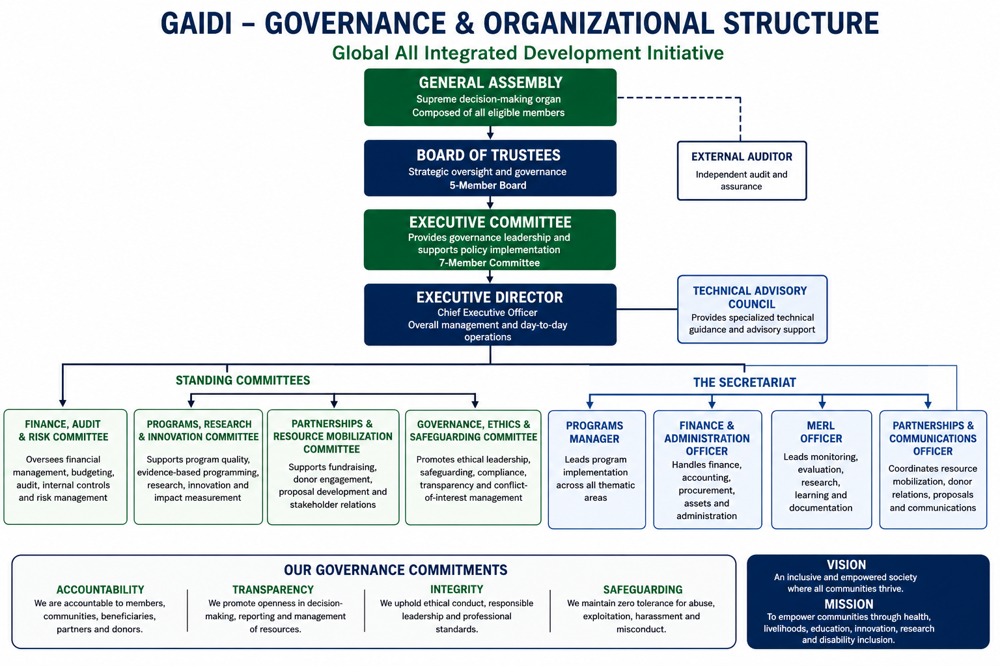

Promoting accountability, transparency, ethical leadership and institutional sustainability.
GAIDI is governed through a structured framework that separates strategic oversight, governance leadership and day-to-day management. This structure promotes transparency, accountability, professionalism and responsible stewardship of resources.
Our governance system is designed to support community trust, donor confidence, institutional continuity and long-term organizational growth.
The supreme governing organ of GAIDI, comprising eligible members. It provides overall direction, approves major decisions and safeguards the organization’s founding vision.
A five-member strategic oversight body responsible for policy oversight, accountability, protection of organizational assets and long-term governance.
A seven-member governance leadership structure responsible for supporting policy implementation, organizational direction and member accountability.
The Chief Executive Officer responsible for day-to-day management, staff supervision, program implementation, reporting and resource mobilization.
GAIDI’s structure clearly distinguishes governance, oversight and management functions to promote efficiency and accountability.

Note: Replace this image with the final high-resolution organizational structure infographic.
The Secretariat is the professional management and administrative arm of GAIDI. It is responsible for daily operations, implementation of approved programs, financial administration, reporting, partnerships and community engagement.
Coordinates implementation of health, livelihoods, education and disability inclusion programs.
Supports budgeting, accounting, procurement, assets, records and administration.
Leads monitoring, evaluation, research, learning, documentation and evidence generation.
Coordinates fundraising, donor relations, proposal development and strategic networking.
Provides oversight on budgeting, financial accountability, audit follow-up, internal controls and risk management.
Supports program quality, evidence-based programming, research, innovation and impact measurement.
Supports fundraising, donor engagement, proposal development, stakeholder engagement and sustainability.
Promotes ethical leadership, safeguarding, accountability, compliance, transparency and conflict-of-interest management.
GAIDI remains accountable to members, communities, beneficiaries, partners and donors.
We promote openness in decision-making, reporting and management of resources.
We maintain zero tolerance for abuse, exploitation, harassment and misconduct.
We uphold ethical conduct, responsible leadership and professional standards.
GAIDI’s governance framework is designed to build trust, attract partnerships and deliver sustainable impact for vulnerable communities.
Partner With Us